<!doctype html>
<html class="no-js" lang="">

<head>
    <meta charset="utf-8">
    <meta http-equiv="x-ua-compatible" content="ie=edge">
    <title></title>
    <meta name="description" content="">
    <meta name="viewport" content="width=device-width, initial-scale=1">

    <!-- Place favicon.ico in the root directory -->
    <!-- <link rel="stylesheet" href="https://use.typekit.net/cua6unr.css"> -->
    <link rel="stylesheet" href="https://cdnjs.cloudflare.com/ajax/libs/foundation/6.4.3/css/foundation.min.css">
    <link rel="stylesheet" href="https://cdnjs.cloudflare.com/ajax/libs/fullPage.js/2.9.7/jquery.fullpage.css">

    <script>
        (function (d) {
            var config = {
                kitId: 'cua6unr',
                scriptTimeout: 3000,
                async: true
            },
                h = d.documentElement, t = setTimeout(function () { h.className = h.className.replace(/\bwf-loading\b/g, "") + " wf-inactive"; }, config.scriptTimeout), tk = d.createElement("script"), f = false, s = d.getElementsByTagName("script")[0], a; h.className += " wf-loading"; tk.src = 'https://use.typekit.net/' + config.kitId + '.js'; tk.async = true; tk.onload = tk.onreadystatechange = function () { a = this.readyState; if (f || a && a != "complete" && a != "loaded") return; f = true; clearTimeout(t); try { Typekit.load(config) } catch (e) { } }; s.parentNode.insertBefore(tk, s)
        })(document);
    </script>
</head>

<body>
    <!--[if lte IE 9]>
            <p class="browserupgrade">You are using an <strong>outdated</strong> browser. Please <a href="https://browsehappy.com/">upgrade your browser</a> to improve your experience and security.</p>
        <![endif]-->

    <div class="main-content">
        <div id="header" class="grid-x grid-padding-x grid-padding-y">
            <div class="cell shrink">
                <a href="#" class="home">
                    
                </a>
            </div>
            <div class="cell auto grid-y align-center">
                <div class="grid-x grid-padding-x align-middle">
                    <ul class="cell auto menu simple">
                        <li>
                            <a href="#">At a glance</a>
                        </li>
                        <li>
                            <a href="#">Financials</a>
                        </li>
                        <li>
                            <a href="#">Leadership</a>
                        </li>
                        <li>
                            <a href="#">Funders</a>
                        </li>
                    </ul>
                    <div class="cell shrink">
                        
                    </div>
                    <div class="cell shrink">
                        <div class="toc-toggle">
                            <div class="toc-toggle-inner">
                                Start
                            </div>
                        </div>
                    </div>
                </div>
            </div>
        </div>

        <div id="fullpage">
            <div class="section intro">
                <div class="grid-x align-center align-middle">
                    <div class="intro-header skip-intro">
                        <span>How do we</span>
                        <br/>
                        <span id="words">
                            <span style="opacity: 0; position: absolute;">improve lives?</span>
                        </span>
                    </div>
                    <div class="catalyst move-next grid-y align-middle align-center">
                        <div class="cell auto">
                            <svg id="cat_logo" data-name="Layer 1" xmlns="http://www.w3.org/2000/svg" viewBox="0 0 1280 800">
                                <title>catalyze logo</title>
                                <circle id="orange_dot" cx="333.42" cy="369.25" r="9.51" style="fill: #f27321" />
                                <g id="cat_title_white">
                                    <path d="M294.6,368.72c0-22.33,17-38.94,39.71-38.94,10.45,0,20,3.41,26.73,10.23l-2.31,2.42c-6.82-6.6-15.18-9.24-24.31-9.24-20.57,0-36.08,15.4-36.08,35.53s15.51,35.53,36.08,35.53c9.13,0,17.49-2.75,24.31-9.35l2.31,2.42c-6.71,6.93-16.28,10.34-26.73,10.34C311.65,407.66,294.6,391.05,294.6,368.72Z"
                                        style="fill: #fff" />
                                    <path d="M447.94,384.67H401.85l-10.34,22.55h-4.07l35.64-77h3.63l35.64,77h-4.07Zm-1.43-3.19-21.56-47-21.67,47Z" style="fill: #fff"
                                    />
                                    <path d="M510.09,333.63H481.82v-3.41H542v3.41H513.72v73.59h-3.63Z" style="fill: #fff" />
                                    <path d="M621.85,384.67H575.76l-10.34,22.55h-4.07l35.64-77h3.63l35.64,77h-4.07Zm-1.43-3.19-21.56-47-21.67,47Z" style="fill: #fff"
                                    />
                                    <path d="M673.22,330.22H677v73.59h45.1v3.41H673.22Z" style="fill: #fff" />
                                    <path d="M772.66,380.93v26.29h-3.74V380.93l-31.13-50.71h4.07l29,47.08,29-47.08h4Z" style="fill: #fff" />
                                    <path d="M893.22,403.81v3.41H832.06v-2.64L887,333.63H832.61v-3.41H892v2.64l-54.89,70.95Z" style="fill: #fff" />
                                    <path d="M985.4,403.81v3.41h-52v-77h50.49v3.41H937.11v32.78h41.8v3.41h-41.8v34Z" style="fill: #fff" />
                                </g>
                                <g id="cat_title">
                                    <path d="M294.6,368.72c0-22.33,17-38.94,39.71-38.94,10.45,0,20,3.41,26.73,10.23l-2.31,2.42c-6.82-6.6-15.18-9.24-24.31-9.24-20.57,0-36.08,15.4-36.08,35.53s15.51,35.53,36.08,35.53c9.13,0,17.49-2.75,24.31-9.35l2.31,2.42c-6.71,6.93-16.28,10.34-26.73,10.34C311.65,407.66,294.6,391.05,294.6,368.72Z"
                                    />
                                    <path d="M447.94,384.67H401.85l-10.34,22.55h-4.07l35.64-77h3.63l35.64,77h-4.07Zm-1.43-3.19-21.56-47-21.67,47Z" />
                                    <path d="M510.09,333.63H481.82v-3.41H542v3.41H513.72v73.59h-3.63Z" />
                                    <path d="M621.85,384.67H575.76l-10.34,22.55h-4.07l35.64-77h3.63l35.64,77h-4.07Zm-1.43-3.19-21.56-47-21.67,47Z" />
                                    <path d="M673.22,330.22H677v73.59h45.1v3.41H673.22Z" />
                                    <path d="M772.66,380.93v26.29h-3.74V380.93l-31.13-50.71h4.07l29,47.08,29-47.08h4Z" />
                                    <path d="M893.22,403.81v3.41H832.06v-2.64L887,333.63H832.61v-3.41H892v2.64l-54.89,70.95Z" />
                                    <path d="M985.4,403.81v3.41h-52v-77h50.49v3.41H937.11v32.78h41.8v3.41h-41.8v34Z" />
                                </g>
                                <g id="cat_subtitle">
                                    <g>
                                        <path d="M518.22,464.48c1.36-1.44,2.88-3.07,2.88-5.16a2.75,2.75,0,0,0-3.05-3.05,6,6,0,0,0-3.53,1.4v-1.25a6.33,6.33,0,0,1,3.58-1.32c2.47,0,4.34,1.46,4.34,4.08s-1.78,4.37-2.81,5.45l-3.91,4.05h7v1.18h-8.59V468.8Z"
                                            style="fill: #333" />
                                        <path d="M533.31,455.1c3,0,5.28,2.83,5.28,7.56s-2.3,7.56-5.28,7.56-5.28-2.81-5.28-7.56S530.36,455.1,533.31,455.1Zm0,1.15c-2.28,0-4,2.33-4,6.41s1.68,6.41,4,6.41,4-2.31,4-6.41S535.59,456.25,533.31,456.25Z"
                                            style="fill: #333" />
                                        <path d="M543.65,456.9v-1l2.81-.7v14.62h-1.27v-13Z" style="fill: #333" />
                                        <path d="M552.13,456.63v-1.17h9.07v.74c-1.22,1.85-4.9,9-5.71,13.66H554a57.08,57.08,0,0,1,5.62-13.23Z" style="fill: #333"
                                        />
                                        <path d="M573.7,469.86h-1.37l6-14.4h1.08l6,14.4h-1.44l-1.73-4.18h-6.74Zm5.07-12.43-2.88,7.08h5.78Z" style="fill: #333" />
                                        <path d="M591.22,455.46l8.71,11.74V455.46h1.25v14.4h-.91l-8.71-11.74v11.74h-1.25v-14.4Z" style="fill: #333" />
                                        <path d="M608.33,455.46l8.72,11.74V455.46h1.24v14.4h-.91l-8.71-11.74v11.74h-1.25v-14.4Z" style="fill: #333" />
                                        <path d="M624.53,455.46h1.32v7.75c0,4,1.85,5.79,4.64,5.79s4.65-1.8,4.65-5.79v-7.75h1.32v7.73c0,4.85-2.4,7-6,7s-6-2.18-6-7Z"
                                            style="fill: #333" />
                                        <path d="M641.86,469.86h-1.37l6-14.4h1.08l6,14.4H652l-1.73-4.18h-6.75Zm5.07-12.43-2.88,7.08h5.78Z" style="fill: #333" />
                                        <path d="M659.79,455.46v13.22h6.84v1.18h-8.16v-14.4Z" style="fill: #333" />
                                        <path d="M688.59,469.86H687l-4.13-5.95h-3v5.95h-1.32v-14.4H683c3.1,0,4.44,2,4.44,4.22a3.85,3.85,0,0,1-3.17,4.08Zm-2.45-10.18a2.82,2.82,0,0,0-3.12-3.05h-3.14v6.1H683A2.81,2.81,0,0,0,686.14,459.68Z"
                                            style="fill: #333" />
                                        <path d="M701.84,455.46v1.17H695v5.07h5.64v1.18H695v5.8h6.84v1.18h-8.16v-14.4Z" style="fill: #333" />
                                        <path d="M712.06,455.46a4.35,4.35,0,1,1,0,8.69h-3.14v5.71H707.6v-14.4Zm3.12,4.34a2.9,2.9,0,0,0-3.12-3.17h-3.14V463h3.14A2.89,2.89,0,0,0,715.18,459.8Z"
                                            style="fill: #333" />
                                        <path d="M728.5,455.1a7.56,7.56,0,1,1-7.37,7.56A7.24,7.24,0,0,1,728.5,455.1Zm0,1.22c-3.48,0-6,2.55-6,6.34s2.52,6.34,6,6.34,6-2.55,6-6.34S731.93,456.32,728.5,456.32Z"
                                            style="fill: #333" />
                                        <path d="M751.44,469.86h-1.55l-4.13-5.95h-3v5.95h-1.32v-14.4h4.47c3.09,0,4.44,2,4.44,4.22a3.86,3.86,0,0,1-3.17,4.08ZM749,459.68a2.82,2.82,0,0,0-3.12-3.05h-3.15v6.1h3.15A2.81,2.81,0,0,0,749,459.68Z"
                                            style="fill: #333" />
                                        <path d="M754.56,456.63v-1.17h11.6v1.17H761v13.23H759.7V456.63Z" style="fill: #333" />
                                    </g>
                                </g>
                            </svg>
                        </div>
                        <div id="intro-chevron">
                            
                        </div>
                    </div>
                </div>
            </div>
            <!-- SECTION 0 -->
            <div class="section" data-section="0">
                <div class="grid-x align-center inner-frame centered">
                    <div class="small-12 large-8 cell grid-y align-justify">
                        <div class="text-center">
                            <p class="h3">A catalyst is the spark that transforms an idea into a solution.</p>
                            <br>
                            <p class="h3">
                                In this year’s annual report, we share how we are working with our partners to unleash new ideas and opportunities and strengthen
                                our collective capacity to affect change.
                            </p>
                        </div>
                        <hr class="medium align-self-middle">
                        <div class="grid-x grid-padding-x align-center p2">
                            <div class="cell shrink">
                                
                            </div>
                            <div class="cell shrink grid-y align-center">
                                <p class="h6 uppercase">A message from our CEO</p>
                                <p class="h2 mb0">PATRICK FINE</p>
                            </div>
                        </div>
                    </div>
                </div>
                <div class="drawer-button_container" data-toggle="0">
                    
                    
                </div>
                <div class="leftDrawer" data-toggle="0">
                    <div class="grid-y grid-padding-x grid-padding-y">
                        <section class="cell auto">
                            <h1 class="drawer-title">A message from our CEO</h1>
                            <div class="drawer-content">
                                <p class="mb0">
                                    <strong class="uppercase">Patrick Fine</strong>
                                </p>
                                <p class="uppercase">Chief Executive Officer, FHI 360</p>
                                <p>
                                     When a catalyst is added, something special happens. A catalyst is the spark that turns
                                    an idea into a solution. It’s the bridge that makes the unthinkable possible.
                                </p>

                                <p>
                                    In these year’s annual report, we offer a glimpse into some of the many ways FHI 360 is catalyzing change in the United States
                                    and around the world. By bringing together the right combination of skills and expertise
                                    needed to ignite and accelerate change, we are curbing the spread of HIV and tuberculosis,
                                    improving nutrition, preparing students for tomorrow’s workforce, supporting small businesses
                                    and more.
                                </p>

                                <p>
                                    Enabling solutions to take shape and spread requires strong partnerships. We partner with national and local governments,
                                    the private sector, academic institutions, foundations, multilaterals and many others
                                    because each collaboration unleashes new ideas, accelerates innovation and strengthens
                                    our collective capacity to affect change. It’s like building the equivalent of a paved
                                    highway to bypass a dirt road. When the momentum gets going, change is unstoppable.
                                </p>

                                <p>
                                    Unlike a chemical catalyst, however, which by its very definition is not itself affected by the change it sparks, our staff
                                    in more than 60 countries around the world are always looking for new ways to work smarter,
                                    to constantly learn and to be more effective than before.
                                </p>

                                <p>
                                    As you read about the some of the people we have had the privilege to work with — the beekeeper with a dream to expand her
                                    small business, the economist with a vision to bring good nutrition for all to his country,
                                    the educator who is committed to ensuring students in her home state succeed — we hope
                                    you see how challenges that once seemed insurmountable can be overcome by dreaming big
                                    and accelerating the path to new opportunities.
                                </p>

                                <p>
                                    Warm regards,
                                </p>
                                <p>Patrick C. Fine</p>
                                <p>
                                    Chief Executive Officer,
                                </p>
                                <p>
                                    FHI 360
                                </p>
                            </div>
                        </section>
                    </div>
                </div>
                <div class="photo-credit-container">
                    <div class="photo-credit-trigger grid-x grid-padding-x align-middle">
                        <span class="cell auto">Photo credit</span>
                        
                    </div>
                </div>
            </div>
            <!-- SECTION 1 -->
            <div class="section fp-tablecell-auto" data-section="1">
                <div class="bg object-fit">
                    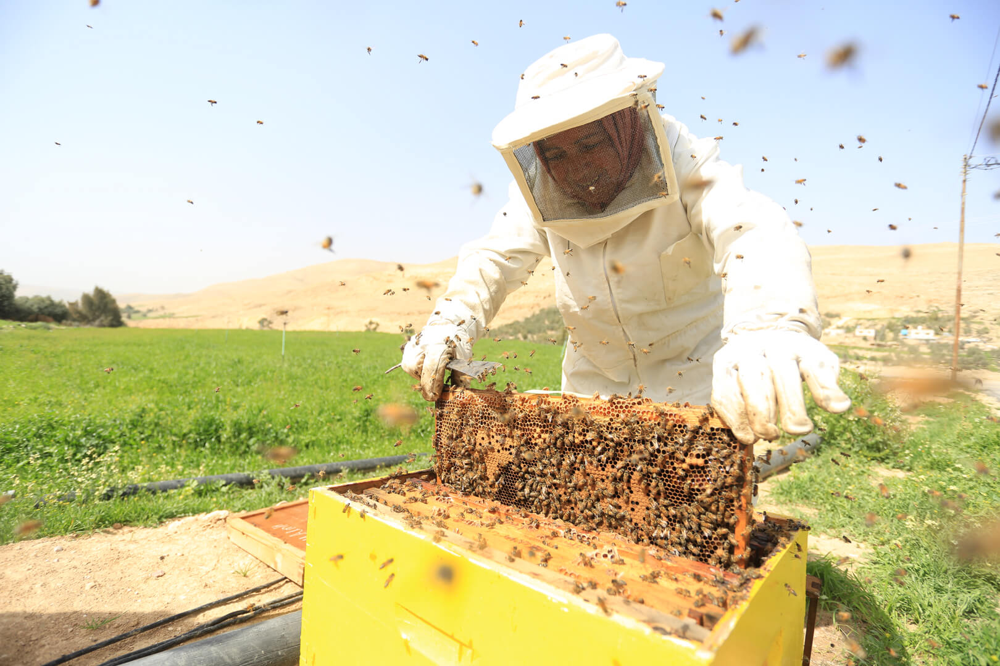
                </div>
                <div class="bg-screen"></div>
                <div class="grid-x inner-frame">
                    <div class="small-12 medium-6 large-6 cell grid-y align-center">
                        <div class="cell shrink slide-title stagger-in">
                            <h2>A beekeeper uses new skills to build a thriving business</h2>
                        </div>
                        <div class="cell shrink stagger-in">
                            <hr class="small">
                        </div>
                        <div class="cell shrink slide-subtitle stagger-in">
                            <h3>Samira Saeed Mouawwad</h3>
                            <h3>Business-owner, Jordan</h3>
                        </div>
                    </div>
                </div>
                <div class="drawer-button_container" data-toggle="1">
                    
                    
                    <span class="h6 uppercase drawer-button_label">Read Story</span>
                </div>
                <div class="leftDrawer" data-toggle="1">
                    <div class="grid-y grid-padding-x grid-padding-y">
                        <section class="cell auto">
                            <h1 class="drawer-title">A beekeeper uses new skills to build a thriving business</h1>
                            <div class="drawer-content">
                                <p>
                                    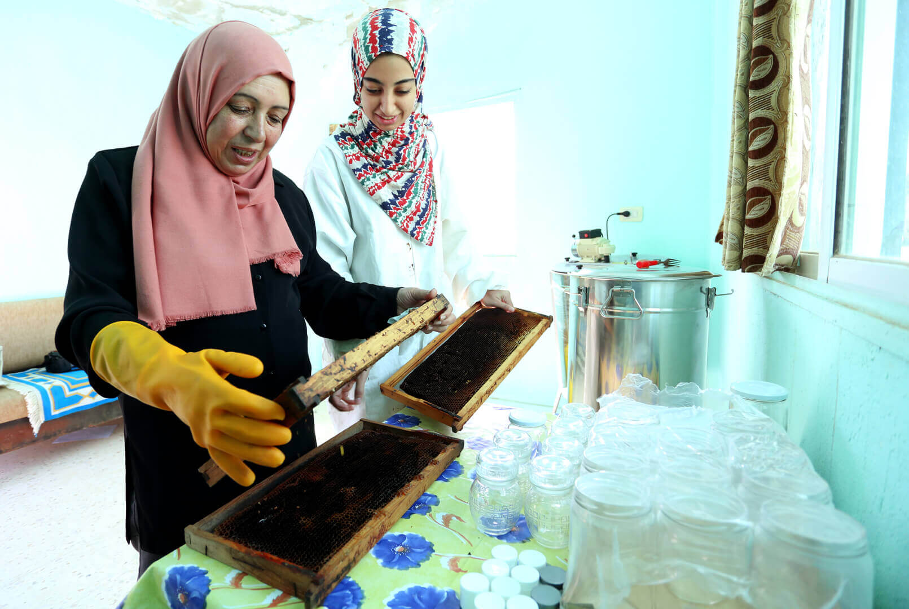
                                </p>
                                <p>As a young girl in Jordan, Samira Saeed Mouawwad watched her neighbors tend to their bees
                                    and collect their sugary harvest. Over the years, her interest in beekeeping grew. When
                                    Mouawwad and her husband began to struggle financially, she decided to transform her
                                    passion into a business. “I took many training courses before I was able to master beekeeping,”
                                    says Mouawwad. “Now I import bees from abroad, nurture them, grow them and make pure
                                    honey.”
                                </p>
                                <p>Mouawwad, who is one of the first women in area to practice beekeeping for a living, improved
                                    her beekeeping skills over time. But, when she participated in the Local Enterprise Support
                                    (LENS) home-based business upgrade training, Mouawwad was able to take her business to
                                    the next level.
                                    <strong>The LENS project is helping entrepreneurs in Jordan to grow their small, home-based businesses
                                        into larger, income generators with steady streams of revenue.</strong>
                                </p>
                            </div>
                        </section>
                    </div>
                </div>
                <div class="photo-credit-container">
                    <div class="photo-credit-trigger grid-x grid-padding-x">
                        <span>Photo credit</span>
                        
                    </div>
                </div>
            </div>
            <!-- SECTION 2 -->
            <div class="section fp-tablecell-auto" data-section="2">
                <div class="bg object-fit">
                    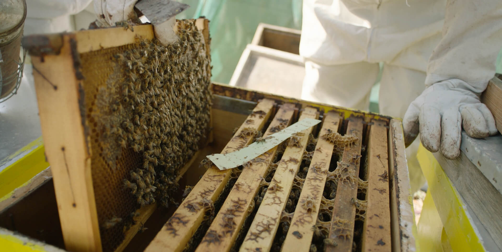
                </div>
                <div class="bg-screen"></div>
                <div class="grid-x inner-frame">
                    <div class="small-12 medium-9 large-8 cell grid-y align-center">
                        <div class="cell shrink slide-title stagger-in">
                            <h2>“The focus on small and home-based businesses is giving women the tools they need to become more
                                powerful and independent, and this leads to their greater contribution to the economy.”</h2>
                        </div>
                        <div class="cell shrink stagger-in">
                            <hr class="small">
                        </div>
                        <div class="cell shrink slide-subtitle stagger-in">
                            <h3>Samira Saeed Mouawwad</h3>
                            <h3>Business-owner, Jordan</h3>
                        </div>
                    </div>
                </div>
                <div class="photo-credit-container">
                    <div class="photo-credit-trigger grid-x grid-padding-x align-middle">
                        <span class="cell auto">Photo credit</span>
                        
                    </div>
                </div>
            </div>
            <!-- SECTION 3 -->
            <div class="section fp-tablecell-auto" data-section="3">
                <div class="bg object-fit">
                    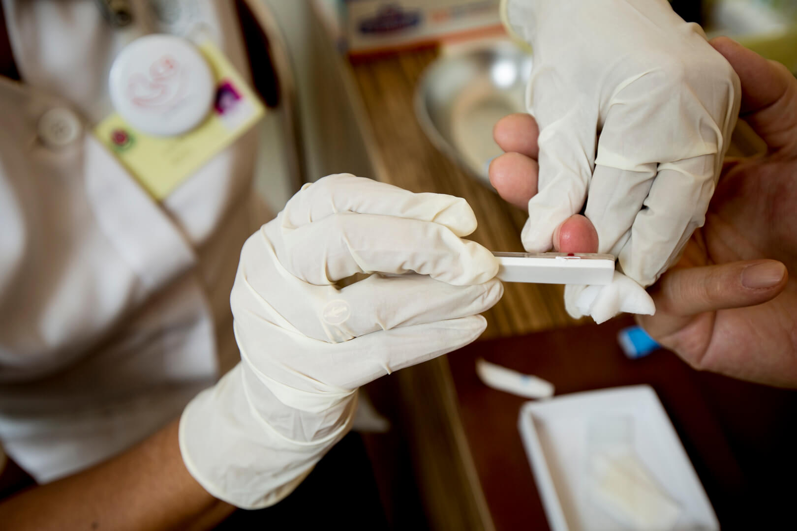
                </div>
                <div class="bg-screen purple"></div>
                <div class="grid-x inner-frame">
                    <div class="small-12 medium-4 large-6 cell grid-y align-center">
                        <div class="cell shrink slide-title stagger-in">
                            <h2>Long-acting injection shows promise for HIV prevention</h2>
                        </div>
                        <div class="cell shrink">
                            <hr class="invisible">
                        </div>
                        <div class="cell shrink slide-subtitle stagger-in">
                            <div class="grid-x grid-padding-x align-middle">
                                <div class="cell shrink">
                                    
                                </div>
                                <div class="cell small-auto medium-8">
                                    <h3>Injectable cabotegravir may be an alternative to a daily dose of PrEP</h3>
                                </div>
                            </div>
                        </div>
                    </div>
                </div>
                <div class="drawer-button_container" data-toggle="3">
                    
                    
                    <span class="h6 uppercase drawer-button_label">Learn More</span>
                </div>
                <div class="leftDrawer" data-toggle="3">
                    <div class="grid-y grid-padding-x grid-padding-y">
                        <section class="cell auto">
                            <h1 class="drawer-title">Long-acting injection shows promise for HIV prevention</h1>
                            <div class="drawer-content">
                                <p>One of the greatest barriers to ensuring that antiretroviral drugs for pre-exposure prophylaxis
                                    (PrEP) are effective in people who are at higher risk of acquiring HIV is the need to
                                    take a pill for PrEP every day consistently. Making progress on ending the global HIV
                                    epidemic hinges on providing multiple options for HIV prevention, especially options
                                    that do not require daily regimens.</p>
                                <p>FHI 360 serves as the Leadership and Operations Center for the HIV Prevention Trials Network
                                    (HPTN), a global, collaborative, clinical trials network that develops and tests the
                                    safety and efficacy of HIV prevention interventions. HPTN launched the first global trial
                                    of cabotegravir (
                                    <a href='https://www.hptn.org/news-and-events/press-releases/long-acting-injectable-cabotegravir-for-prep-well-tolerated-hptn-077'
                                        target='_blank'>HPTN 077</a>), a long-acting injectable drug for PrEP, in 2015.
                                    <strong>HPTN 077 study data released in 2017 showed that injectable cabotegravir is safe and
                                        well-tolerated, and the study dose stays in the bloodstream at levels expected to
                                        be protective when injections are administered every eight weeks.</strong> The study
                                    and data analysis will continue until July 2018.", "Long-acting injectable cabotegravir
                                    could provide an easier, more practical alternative to the current regimen of daily oral
                                    tenofovir disoproxil fumarate/emtricitabine for PrEP. This option could help bring us
                                    closer to controlling the HIV epidemic.</p>
                            </div>
                        </section>
                    </div>
                </div>
                <div class="photo-credit-container">
                    <div class="photo-credit-trigger grid-x grid-padding-x align-middle">
                        <span class="cell auto">Photo credit</span>
                        
                    </div>
                </div>
            </div>
            <!-- SECTION 4 -->
            <div class="section fp-tablecell-auto" data-section="4">
                <div class="bg object-fit">
                    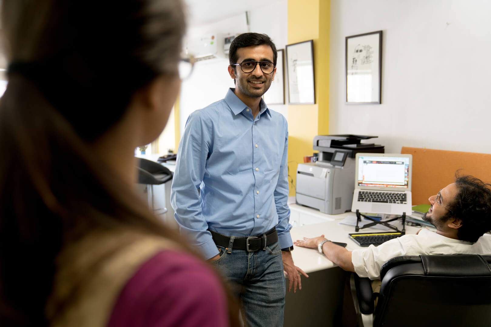
                </div>
                <div class="bg-screen"></div>
                <div class="grid-x inner-frame">
                    <div class="small-12 medium-4 large-4 cell grid-y align-center">
                        <div class="cell shrink slide-title stagger-in">
                            <h2>Emerging leaders develop lasting connections</h2>
                        </div>
                        <div class="cell shrink stagger-in">
                            <hr class="small">
                        </div>
                        <div class="cell shrink slide-subtitle stagger-in">
                            <h3>Yatin Thakur</h3>
                            <h3>Entrepreneur, India</h3>
                        </div>
                    </div>
                </div>
                <div class="drawer-button_container" data-toggle="4">
                    
                    
                    <span class="h6 uppercase drawer-button_label">Read Story</span>
                </div>
                <div class="leftDrawer" data-toggle="4">
                    <div class="grid-y grid-padding-x grid-padding-y">
                        <section class="cell auto">
                            <h1 class="drawer-title">Emerging leaders develop lasting connections</h1>
                            <div class="drawer-content">
                                <p>
                                    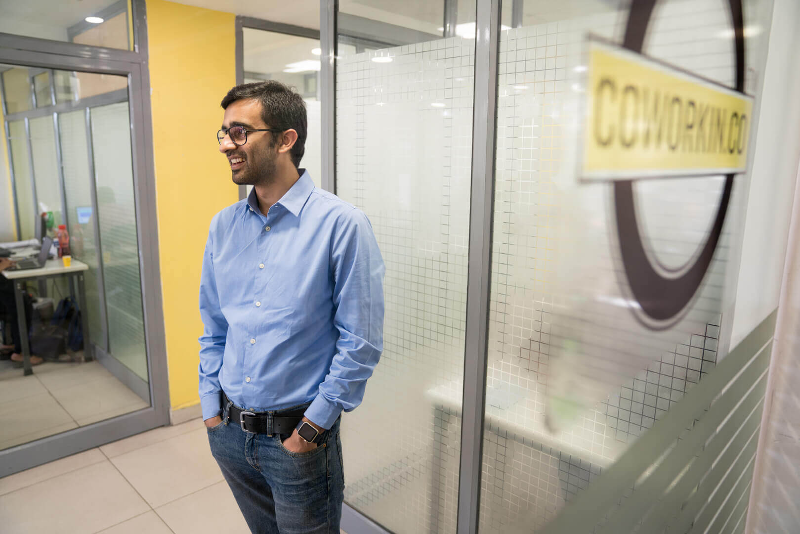
                                </p>
                                <p>Yatin Thakur is a young Indian “serial entrepreneur” with big ambitions. Just 30 years old,
                                    he has already founded Startup India, a collective aimed at fostering entrepreneurship,
                                    and CoWorkin, a company that caters to a new generation of Indian entrepreneurs by providing
                                    affordable co-working spaces throughout New Delhi. This is in addition to founding seven
                                    other start-ups focused on wireless technology, media and bridging India’s rural-urban
                                    divide.
                                </p>
                                <p>Thakur and five other Indian technology entrepreneurs visited the United States as part of
                                    an International Visitor Leadership Program (IVLP) called “Showcasing the American Technological
                                    Experience.” For 22 days, they traveled to several U.S. cities — Boston, Kansas City,
                                    Manchester, New York, Salt Lake City and Washington, DC — where they learned firsthand
                                    about e-governance initiatives, broadband access in rural areas, big data and development
                                    in high-density cities and best practices in government use of information technology.
                                    They also discussed how to gain investors and create the infrastructure to implement
                                    technological tools that might not yet exist.</p>
                                <p>Every year, IVLP brings together from across sectors emerging foreign leaders like Thakur
                                    and their peers in the United States for short-term visits in which they can learn from
                                    one another, increase mutual understanding and connect to new ideas and opportunities.
                                    The leaders who participate in the IVLP program return to their home countries with energy
                                    and information that ignite new ideas and fresh approaches.</p>
                            </div>
                        </section>
                    </div>
                </div>
                <div class="photo-credit-container">
                    <div class="photo-credit-trigger grid-x grid-padding-x align-middle">
                        <span class="cell auto">Photo credit</span>
                        
                    </div>
                </div>
            </div>
            <!-- SECTION 5 -->
            <div class="section fp-tablecell-auto" data-section="5">
                <div class="bg object-fit">
                    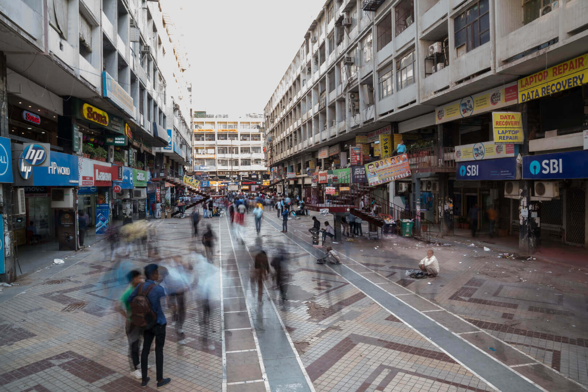
                </div>
                <div class="bg-screen"></div>
                <div class="grid-x inner-frame">
                    <div class="small-12 large-8 cell grid-y align-center">
                        <div class="cell shrink slide-title stagger-in">
                            <h2>“My exposure to the U.S. environment showed me how to bring in the right people to work to achieve
                                scale.”
                            </h2>
                        </div>
                        <div class="cell shrink stagger-in">
                            <hr class="small">
                        </div>
                        <div class="cell shrink slide-subtitle stagger-in">
                            <h3>Yatin Thakur</h3>
                            <h3>Entrepreneur, India</h3>
                        </div>
                    </div>
                </div>
                <div class="photo-credit-container">
                    <div class="photo-credit-trigger grid-x grid-padding-x align-middle">
                        <span class="cell auto">Photo credit</span>
                        
                    </div>
                </div>
            </div>
            <!-- SECTION 6 -->
            <div class="section fp-tablecell-auto" data-section="6">
                <div class="bg object-fit">
                    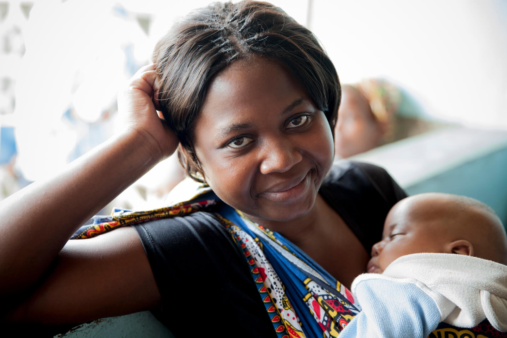
                </div>
                <div class="bg-screen purple"></div>
                <div class="grid-x inner-frame">
                    <div class="small-12 medium-5 large-6 cell grid-y align-center">
                        <div class="cell shrink slide-title stagger-in">
                            <h2>Expanding contraceptive access and choice for women</h2>
                        </div>
                        <div class="cell shrink">
                            <hr class="invisible">
                        </div>
                        <div class="cell shrink slide-subtitle stagger-in">
                            <div class="grid-x grid-padding-x align-middle">
                                <div class="cell shrink">
                                    
                                </div>
                                <div class="cell small-auto medium-8">
                                    <h3>Two-rod contraceptive implant is prequalified by WHO</h3>
                                </div>
                            </div>
                        </div>
                    </div>
                </div>
                <div class="drawer-button_container" data-toggle="6">
                    
                    
                    <span class="h6 uppercase drawer-button_label">Learn More</span>
                </div>
                <div class="leftDrawer" data-toggle="6">
                    <div class="grid-y grid-padding-x grid-padding-y">
                        <section class="cell auto">
                            <h1 class="drawer-title">Expanding contraceptive access and choice for women</h1>
                            <div class="drawer-content">
                                <p>An estimated 214 million women of reproductive age in developing regions want to avoid pregnancy
                                    but are not using a modern contraceptive method. Hormonal contraceptive implants, introduced
                                    more than 30 years ago, are one of the most effective family planning methods available.
                                    Yet, until recently, access to implants has been limited in low-resource settings, largely
                                    because of cost barriers.</p>
                                <p>FHI 360 has led a decade-long initiative that has been at the forefront of increasing access
                                    to high- quality, affordable implants. In 2017, Sino-implant (II), a two-rod implant
                                    that is now marketed globally as Levoplant, was prequalified by the World Health Organization.
                                    Prequalification means that the product is recognized as meeting international standards
                                    of quality, safety and efficacy. As part of this process, FHI 360 partnered with the
                                    manufacturer of Levoplant, Shanghai Dahua Pharmaceutical Co., Ltd. (Dahua), to improve
                                    manufacturing quality systems, conduct clinical trials for prequalification and establish
                                    a global regulatory footprint and distribution platform.</p>
                                <p>More than 1.5 million units of the product have been distributed globally through the initiative.
                                    By increasing competition in the implants market, the introduction of Levoplant has also
                                    helped reduce the price of other implant products, further increasing women’s access
                                    and helping countries achieve their goals under the Family Planning 2020 (FP2020) initiative.</p>
                                <p>To achieve a sustainable business model, Dahua recently formed a partnership with DKT International,
                                    a non-profit organization, to become their global distributor and announced further price
                                    reductions of Levoplant in FP2020 countries. This is an important step in reaching additional
                                    markets with highly effective and affordable implants.</p>
                                <p>
                                    <hr>
                                </p>
                                <p>Project name</p>
                                <p>HIV Prevention Trials Network (HPTN) Leadership and Operations Center Funder</p>
                                <p>U.S. National Institutes of Health (National Institute of Allergy and Infectious Diseases)</p>
                            </div>
                        </section>
                    </div>
                </div>
                <div class="photo-credit-container">
                    <div class="photo-credit-trigger grid-x grid-padding-x align-middle">
                        <span class="cell auto">Photo credit</span>
                        
                    </div>
                </div>
            </div>
            <!-- SECTION 7 -->
            <div class="section fp-tablecell-auto" data-section="7">
                <div class="bg object-fit">
                    
                </div>
                <div class="bg-screen"></div>
                <div class="grid-x inner-frame">
                    <div class="small-12 medium-6 large-4 cell grid-y align-center">
                        <div class="cell shrink slide-title stagger-in">
                            <h2>Data drives student success in America’s heartland</h2>
                        </div>
                        <div class="cell shrink stagger-in">
                            <hr class="small">
                        </div>
                        <div class="cell shrink slide-subtitle stagger-in">
                            <h3>Jennifer Carlson</h3>
                            <h3>Educator, United States</h3>
                        </div>
                    </div>
                </div>
                <div class="drawer-button_container" data-toggle="7">
                    
                    
                    <span class="h6 uppercase drawer-button_label">Read Story</span>
                </div>
                <div class="leftDrawer" data-toggle="7">
                    <div class="grid-y grid-padding-x grid-padding-y">
                        <section class="cell auto">
                            <h1 class="drawer-title">Data drives student success in America’s heartland</h1>
                            <div class="drawer-content">
                                <p>The Succeed 2020 project had a bold and ambitious goal: Support all North Dakota students
                                    to successfully transition from school to college and 21st century careers.</p>
                                <p>Although students were enrolling in postsecondary education, they were not staying in school:
                                    North Dakota’s postsecondary completion rates for both two-year and four-year institutions
                                    fell below the national averages.</p>
                                <p>Leading the charge for change were eight regional education associations that work with school
                                    districts, higher education institutions, state and local governments, businesses and
                                    community groups. To aid their efforts, Succeed 2020 provided tools to generate data
                                    and research that enable educators to develop targeted programs for the unique needs
                                    of differing schools.</p>
                                <p>
                                    <strong>Customized solutions</strong>
                                </p>
                                <p>For Jennifer Carlson, the project’s resources and technical support were crucial to transforming
                                    her district’s largely rural schools into those that provided more rigorous academic
                                    and career and technical programs, college and career counseling and supports for students
                                    needing additional help. “The project really helped us to drill down and determine the
                                    best way to achieve the most goals within the fastest time,” said Carlson, the executive
                                    director of North Dakota’s Northeast Education Services Cooperative (NESC), one of the
                                    state’s regional education associations.</p>
                                <p>NESC designed a data system that consistently collects and analyzes quality data, both from
                                    internal and external sources. The data system increased NESC’s capacity to identify
                                    gaps in services and supports and more effectively allocate resources in the region’s
                                    22-member public, private and tribal school districts. Educators were offered professional
                                    development activities, while students had access to more rigorous curricula and college
                                    and career preparation activities, including virtual job shadowing and science, technology,
                                    engineering and math (STEM) camps.
                                    <p>
                            </div>
                        </section>
                    </div>
                </div>
                <div class="photo-credit-container">
                    <div class="photo-credit-trigger grid-x grid-padding-x align-middle">
                        <span class="cell auto">Photo credit</span>
                        
                    </div>
                </div>
            </div>
            <!-- SECTION 8 -->
            <div class="section fp-tablecell-auto" data-section="8">
                <div class="bg object-fit">
                    
                </div>
                <div class="bg-screen darker"></div>
                <div class="grid-x inner-frame">
                    <div class="small-12 large-9 cell grid-y align-center">
                        <div class="cell shrink slide-title stagger-in">
                            <h2>“The project really helped us to drill down and determine the best way to achieve the most goals
                                within the fastest time,” </h2>
                        </div>
                        <div class="cell shrink stagger-in">
                            <hr class="small">
                        </div>
                        <div class="cell shrink slide-subtitle stagger-in">
                            <h3>Jennifer Carlson</h3>
                            <h3>Educator, United States</h3>
                        </div>
                    </div>
                </div>
                <div class="photo-credit-container">
                    <div class="photo-credit-trigger grid-x grid-padding-x align-middle">
                        <span class="cell auto">Photo credit</span>
                        
                    </div>
                </div>
            </div>
            <!-- SECTION 9 -->
            <div class="section fp-tablecell-auto" data-section="9">
                <div class="bg object-fit">
                    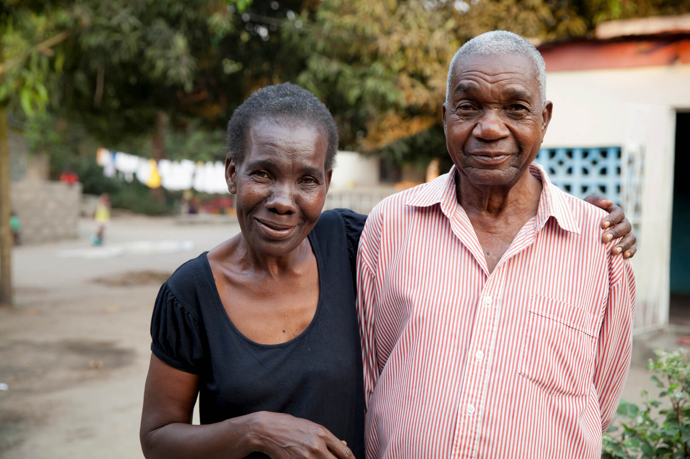
                </div>
                <div class="bg-screen purple"></div>
                <div class="grid-x inner-frame">
                    <div class="small-12 medium-6 large-5 cell grid-y align-center">
                        <div class="cell shrink slide-title stagger-in">
                            <h2>Bringing TB prevention and care into communities in Mozambique</h2>
                        </div>
                        <div class="cell shrink">
                            <hr class="invisible">
                        </div>
                        <div class="cell shrink slide-subtitle stagger-in">
                            <h3>In some provinces, TB detection
                                <br>through CB-DOTS has increased to</h3>
                        </div>
                        <div class="grid-x align-middle stagger-in">
                            <div class="cell shrink" style="padding-right: 20px;">
                                
                            </div>
                            <div class="cell shrink">
                                <div class="counter h3">
                                    <span data-countup>36</span>%
                                </div>
                            </div>
                        </div>
                    </div>
                    <div class="drawer-button_container" data-toggle="9">
                        
                        
                        <span class="h6 uppercase drawer-button_label">Learn More</span>
                    </div>
                    <div class="leftDrawer" data-toggle="9">
                        <div class="grid-y grid-padding-x grid-padding-y">
                            <section class="cell auto">
                                <h1 class="drawer-title">Bringing TB prevention and care into communities in Mozambique</h1>
                                <div class="drawer-content">
                                    <p>Tuberculosis (TB) is one of 10 leading causes of death worldwide: 1.7 million people
                                        died from the disease in 2016, according to the World Health Organization. TB is
                                        also treatable — and curable — but very contagious. About 40 percent of TB cases
                                        worldwide are not treated by health systems and are defined as “missing.” Finding
                                        missing cases is critical to TB control.</p>
                                    <p>In Mozambique, where the number of new cases of TB remains high — 551 in 100,000 people
                                        infected each year — FHI 360 is using CB-DOTS (community-based directly observed
                                        treatment, short course) with increasing success to combat the disease in four provinces
                                        that account for 49 percent of the national TB burden: Nampula, Sofala, Tete and
                                        Zambézia. Between 2015 and 2017, the proportion of TB patients detected through CB-DOTS
                                        activities increased from 12 percent to 36 percent of all TB patients detected in
                                        these provinces.</p>
                                    <p>The CB-DOTS strategy involves training community health workers to increase awareness,
                                        detection and treatment of TB and brings services directly to the homes of those
                                        at risk for infection. Health workers observe patients swallow each dose for six
                                        months and record and report cases and treatment outcomes. In addition, they encourage
                                        patients suspected to have TB to go to health units, where they are given sputum-smear
                                        microscopy tests, which increases early case detection and diagnosis. All family
                                        members are screened for TB and referred to appropriate treatment services.</p>
                                    <p>In these most-affected provinces, FHI 360 convenes “monthly cough days,” where health
                                        facility teams visit remote areas to provide access to TB screening, lab specimen
                                        collection and other health services. Cough officers at health facilities are trained
                                        to identify patients and refer them to TB clinics. Guards and inmates at prisons,
                                        where TB is prevalent and spreads rapidly, are trained to detect cases and connect
                                        individuals to health services.</p>
                                    <p>The CB-DOTS strategy also focuses on political commitment by national governments, which
                                        is central to implementing national TB strategies and programs. Tools and activities
                                        developed by FHI 360 are now being used by other partners in additional provinces
                                        in Mozambique as part of a national scale-up effort.</p>
                                </div>
                            </section>
                        </div>
                    </div>
                </div>
                <div class="photo-credit-container">
                    <div class="photo-credit-trigger grid-x grid-padding-x align-middle">
                        <span class="cell auto">Photo credit</span>
                        
                    </div>
                </div>
            </div>
            <!-- SECTION 10 -->
            <div class="section fp-tablecell-auto" data-section="10">
                <div class="bg object-fit">
                    
                </div>
                <div class="bg-screen darker"></div>
                <div class="grid-x inner-frame">
                    <div class="small-12 medium-6 large-4 cell grid-y align-center">
                        <div class="cell shrink slide-title stagger-in">
                            <h2>A multisectoral approach transforms nutrition in Tanzania</h2>
                        </div>
                        <div class="cell shrink stagger-in">
                            <hr class="small">
                        </div>
                        <div class="cell shrink slide-subtitle stagger-in">
                            <h3>Obey Assery</h3>
                            <h3>Economist, Tanzania</h3>
                        </div>
                    </div>
                </div>
                <div class="drawer-button_container" data-toggle="10">
                    
                    
                    <span class="h6 uppercase drawer-button_label">Read Story</span>
                </div>
                <div class="leftDrawer" data-toggle="10">
                    <div class="grid-y grid-padding-x grid-padding-y">
                        <section class="cell auto">
                            <h1 class="drawer-title">A multisectoral approach transforms nutrition in Tanzania</h1>
                            <div class="drawer-content">
                                <p>Although there have been notable improvements in the last decade, undernutrition remains
                                    pervasive in Tanzania: 34 percent of children under 5 years of age are stunted, while
                                    14 percent are underweight.</p>

                                <p>But, there is new hope for progress. With support from the Food and Nutrition Technical Assistance
                                    III (FANTA) project, Tanzania has adopted an evidence-based, multisectoral approach to
                                    transform nutrition — one that breaks new ground in the country and can serve as a model
                                    for nutrition policy globally.</p>

                                <p>
                                    <strong>Breaking silos, widening the scope</strong>
                                </p>
                                <p>Obey Assery, a trained economist and the Director of the Coordination of Government Business
                                    Department in the Prime Minister’s Office, played a pivotal role in building support
                                    for a more comprehensive approach to nutrition.</p>

                                <p>“Nutrition was initially only really looked at as a health initiative,” said Assery, who
                                    worked in close collaboration with FANTA to strengthen and align government efforts on
                                    nutrition reform. “It’s now become a multisectoral issue, which requires everyone to
                                    be involved.”</p>

                                <p>This change did not come quickly. Political commitment was essential to shift mindsets and
                                    was built over time. It took a concerted effort to increase awareness of the consequences
                                    of malnutrition and its effect on multiple sectors. Not only does malnutrition lead to
                                    underperformance in school, it reduces participation in the workforce and undermines
                                    economic growth and a country’s overall development.</p>
                                <p>FANTA’s approach focused on supporting the Prime Minister’s Office and the Tanzania Food
                                    and Nutrition Centre in building individual and institutional capacity, mentoring leaders,
                                    fostering relations with community groups and strengthening coordination across sectors
                                    to increase the sustainability of evidence-based nutrition programs. These efforts resulted
                                    in policy revision and the launch of Tanzania’s first five-year Multisectoral Nutrition
                                    Action Plan (2016–2021).</p>
                                <p>“We put together technical people from different sectors with a common agenda,” says Assery.
                                    “This meant bringing in the people from agriculture, from livestock, from water, from
                                    finance — people with different thinking to widen the scope and work together.</p>
                                <p>The FANTA project has also integrated and systematically scaled up nutrition assistance,
                                    counseling and support (NACS) into national and local government plans, budgets and program
                                    guidelines; routine health service delivery; community-based programs; and HIV care and
                                    treatment, prevention of mother-to-child transmission and most-vulnerable children programs.
                                    Health managers, health care providers and community workers have been trained in the
                                    NACS approach. Training and reference materials, job aids, and monitoring and evaluation
                                    tools for service providers have been developed and distributed. By mid- 2017, NACS services
                                    were integrated into health facilities and community services in 22 of mainland Tanzania’s
                                    26 regions.</p>
                                <p>
                                    <strong>Healthier, more productive citizens</strong>
                                </p>
                                <p>Using an evidence-based, multistakeholder tool called PROFILES, FANTA estimated that, over
                                    a ten-year period (2014–2025), there will be significant health and economic benefits
                                    as a result of nutrition improvements in Tanzania. Among them: Hundreds of thousands
                                    of lives saved and disabilities reduced.</p>
                                <p>Tanzania was one of the first countries to put the NACS approach into operation, and to emphasize
                                    a multisectoral approach to tackling nutrition problems. Says Assery, “Other countries
                                    are now seeking Tanzania’s help in creating models they can use to address similar issues
                                    and achieve similar results.”
                                    <p>
                            </div>
                        </section>
                    </div>
                </div>
                <div class="photo-credit-container">
                    <div class="photo-credit-trigger grid-x grid-padding-x align-middle">
                        <span class="cell auto">Photo credit</span>
                        
                    </div>
                </div>
            </div>
            <!-- SECTION 11 -->
            <div class="section fp-tablecell-auto" data-section="11">
                <div class="bg object-fit">
                    
                </div>
                <div class="bg-screen purple"></div>
                <div class="grid-x inner-frame">
                    <div class="small-12 medium-6 large-4 cell grid-y align-center">
                        <div class="cell shrink slide-title stagger-in">
                            <h2>Supporting Myanmar’s democratic transition</h2>
                        </div>
                        <div class="cell shrink slide-subtitle stagger-in">
                            <ul class="checkmarks">
                                <li>
                                    
                                    <span>Promoting civic action and engagement</span>
                                </li>
                                <li>
                                    
                                    <span>Supporting an independent media</span>
                                </li>
                                <li>
                                    
                                    <span>Leadership development</span>
                                </li>
                            </ul>
                        </div>
                    </div>
                </div>
                <div class="drawer-button_container" data-toggle="11">
                    
                    
                    <span class="h6 uppercase drawer-button_label">Learn More</span>
                </div>
                <div class="leftDrawer" data-toggle="11">
                    <div class="grid-y grid-padding-x grid-padding-y">
                        <section class="cell auto">
                            <h1 class="drawer-title">Supporting Myanmar’s democratic transition</h1>
                            <div class="drawer-content">
                                <p>After many years of authoritarian rule, the Southeast Asian country of Myanmar (Burma) is
                                    on a journey toward establishing a functioning democracy. Effective, sustainable and
                                    independent civil society and media organizations will be vital to its success.</p>

                                <p>FHI 360 is helping to build civil society and media capacity during Myanmar’s democratic
                                    transition. In partnership with Internews, the Voluntary Service Overseas and the Public
                                    Interest Law and Policy Group, we are laying the foundation for greater openness and
                                    freedom. We give support to civil society and media organizations that seek to advance
                                    Myanmar’s democratic reform through:</p>
                                <p>
                                    <ul>
                                        <li>
                                            <strong>Government engagement.</strong> We provided technical assistance to more than
                                            30 partner organizations on how to engage effectively with government to change
                                            laws and policies and how to develop advocacy approaches tailored to meet specific
                                            goals and strategies by working in coalitions. As part of this work, we brought
                                            together more than 100 civil society representatives with members of parliament
                                            to discuss the rights of farmers, the rights of persons with disabilities, the
                                            right to information, women’s rights, and the ratification of the International
                                            Covenant on Civil and Political Rights. This meeting empowered project partners
                                            to directly engage policymakers.</li>
                                        <li>
                                            <strong>Reintegration and skills building.
                                                <strong>Government engagement.</strong> We connected 50 former political prisoners
                                                with civil society organizations, where they serve as fellows in the Former
                                                Political Prisoners Fellowship Program. The organizations gained the fellows’
                                                political knowledge and advocacy experience, while the fellows developed
                                                practical skills to succeed in the workplace.</li>
                                        <li>
                                            <strong>Leadership development.
                                                <strong>Government engagement.</strong> We trained more than a dozen “inclusion champions,”
                                                who will build local capacity among civil society organizations to change
                                                societal attitudes. The champions attended an eight-month course to develop
                                                — and pass along — their skills in standing up to discrimination and championing
                                                the rights of those who are excluded.</li>
                                        <li>
                                            <strong>Strengthening government relations with the media.
                                                <strong>Government engagement.</strong> Through a local partner organization, Mizzima,
                                                the project has helped 120 state and national-level members of Parliament
                                                better understand the function of the media in a democracy and how they can
                                                work with media to engage the public. Previously, such engagement was not
                                                possible, and this is new territory for both leaders and journalists.</li>
                                    </ul>
                                </p>

                                <p>Through our work, organizations in Myanmar are on an accelerated path to effective leadership
                                    that reflect the interests of their constituents and advocates for positive reform.
                                    <p>
                            </div>
                        </section>
                    </div>
                </div>
                <div class="photo-credit-container">
                    <div class="photo-credit-trigger grid-x grid-padding-x align-middle">
                        <span class="cell auto">Photo credit</span>
                        
                    </div>
                </div>
            </div>
            <!-- SECTION 12 -->
            <div class="section fp-tablecell-auto" data-section="12">
                <div class="bg object-fit">
                    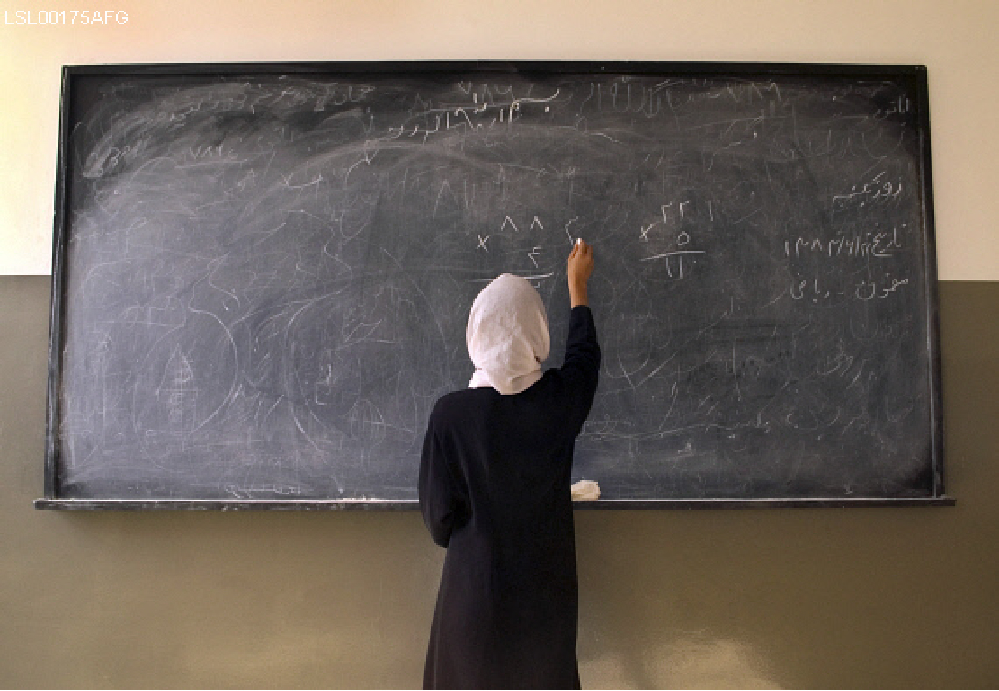
                </div>
                <div class="bg-screen"></div>
                <div class="grid-x inner-frame">
                    <div class="small-12 medium-6 large-4 cell grid-y align-center">
                        <div class="cell shrink slide-title stagger-in">
                            <h2>University degree program prepares Afghani students for tomorrow’s jobs</h2>
                        </div>
                        <div class="cell shrink stagger-in">
                            <hr class="small">
                        </div>
                        <div class="cell shrink slide-subtitle stagger-in">
                            <h3>Yosouf Jami</h3>
                            <h3>Dean, Herat University, Afghanistan</h3>
                        </div>
                    </div>
                </div>
                <div class="drawer-button_container" data-toggle="12">
                    
                    
                    <span class="h6 uppercase drawer-button_label">Read Story</span>
                </div>
                <div class="leftDrawer" data-toggle="12">
                    <div class="grid-y grid-padding-x grid-padding-y">
                        <section class="cell auto">
                            <h1 class="drawer-title">University degree program prepares Afghani students for tomorrow’s jobs</h1>
                            <div class="drawer-content">
                                <p>Decades-long conflict has stunted economic growth and development in Afghanistan. To rebuild
                                    their country and fully participate in its workforce, Afghans need more opportunities
                                    for quality higher education and vocational training. This education must take into account
                                    the needs of employers and the realities of the job market.</p>
                                <p>The University Support and Workforce Development Program (USWDP), in partnership with Purdue
                                    University, is helping to fill the need for education programs that are linked to jobs
                                    by establishing a market-oriented food technology bachelor degree program at the Herat
                                    University Faculty of Agriculture (HUFA). In 2017, the degree program transferred 15
                                    third-year students from existing departments into the new food technology department.
                                    This inaugural group is expected to graduate in late 2018.</p>
                                <p>
                                    <strong>A breakthrough in food technology education</strong>
                                </p>
                                <p>“This department is the first food technology program in our country,” said Yosouf Jami,
                                    dean of HUFA, which is in western Afghanistan, about 816 kilometers from Kabul. “Graduates
                                    in this field can serve at the agriculture directorate, food industry companies and health
                                    department and in other food-related areas.”</p>
                                <p>Food technologists use science to create and improve food products. The HUFA curriculum covers
                                    the fundamentals of food technology while teaching applied, practical skills in food
                                    processing and development, food safety and product development. Upon graduation, students
                                    will be offered help finding jobs. More than half of this year’s students (seven) are
                                    female, and plans have been made to ensure that the next group of students has a similar
                                    gender makeup.</p>
                                <p>HUFA, Purdue University and USWDP developed the food technology program in close consultation
                                    with representatives of the food processing industry, who carefully assessed the challenges
                                    faced by the private sector and the skills graduates need to support food production
                                    and processing in Afghanistan.</p>
                                <p>“A lack of skilled employees is our biggest challenge in this sector,” explained Jami. Until
                                    now, people outside Afghanistan were needed for technical assistance. “We hope that graduates
                                    of this department will be able to meet industry needs. This is a major educational necessity
                                    in our country.”</p>
                                <p>USWDP and Purdue University have worked closely since 2015 to design and implement the program.
                                    USWDP has provided technical assistance, such as teaching students about survey methodologies
                                    for basic research, and supplied materials, such as the equipment and chemicals needed
                                    to establish a teaching laboratory. Members of the Purdue food science faculty visit
                                    regularly to provide training and assistance, and HUFA’s faculty have visited Purdue
                                    twice for intensive lab trainings and skills building. USWDP and Purdue are jointly supporting
                                    four HUFA faculty who are pursuing master’s degrees in food technology in India. The
                                    faculty expect to complete their studies in July 2018 and will return to the food technology
                                    department to assume leadership and teaching responsibilies.Jami is optimistic about
                                    the impact of this young program. “The food industry and other organizations will benefit,”
                                    said Jami. “When students graduate and enter society, they will bring the benefit from
                                    their recent study, and the industry will benefit from their professional knowledge and
                                    skills.”
                                </p>
                                <p>
                                    <strong>A smaller part of a larger effort</strong>
                                </p>
                                <p>Eleven universities receive technical and financial support from USWDP, including the food
                                    technology degree program at Herat. Since it began four years ago, USWDP has established
                                    or supported 32 degree programs, including five newly established associate degrees,
                                    18 bachelor’s degrees and eight master’s degrees. These programs, supported by the University
                                    of Massachusetts and other academic institutions, provide students with some of the most
                                    sought-after degrees in Afghanistan. Examples of degree offerings include an associate’s
                                    degree in Information Technology, a bachelor’s degree in Oil and Gas and a master’s degree
                                    in Education Leadership and Management. These programs will bring the country closer
                                    to creating a more technically qualified, professionally capable workforce.
                                    <p>
                            </div>
                        </section>
                    </div>
                </div>
                <div class="photo-credit-container">
                    <div class="photo-credit-trigger grid-x grid-padding-x align-middle">
                        <span class="cell auto">Photo credit</span>
                        
                    </div>
                </div>
            </div>
            <!-- SECTION 13 -->
            <div class="section fp-tablecell-auto" data-section="13">
                <div class="bg object-fit">
                    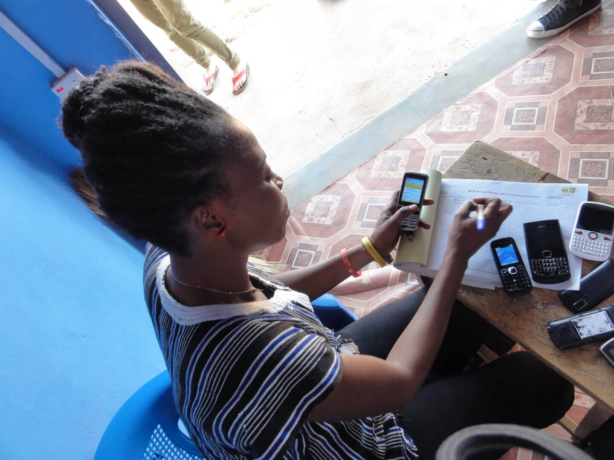
                </div>
                <div class="bg-screen purple"></div>
                <div class="grid-x inner-frame">
                    <div class="small-12 cell grid-y align-center">
                        <div class="cell shrink slide-title stagger-in grid-x">
                            <div class="cell medium-4">
                                <h2>Technology to drive better outcomes</h2>
                            </div>
                        </div>
                        <div class="cell shrink">
                            <hr class="invisible">
                        </div>
                        <div class="cell shrink slide-subtitle stagger-in">
                            <div class="grid-x grid-padding-x">
                                <div class="cell shrink">
                                    
                                </div>
                                <div class="cell auto">
                                    <p class="mb08">In Liberia, mobile money paid</p>
                                    <div class="grid-y">
                                        <div class="cell grid-x align-middle">
                                            <div class="counter h3">
                                                <span data-countup>3,000</span>+
                                                <label>teachers</label>
                                            </div>
                                            <div class="counter h3">
                                                <span data-countup>800</span>+
                                                <label>health care workers</label>
                                            </div>
                                        </div>
                                    </div>
                                </div>
                            </div>
                        </div>
                    </div>
                </div>
                <div class="drawer-button_container" data-toggle="13">
                    
                    
                    <span class="h6 uppercase drawer-button_label">Learn More</span>
                </div>
                <div class="leftDrawer" data-toggle="13">
                    <div class="grid-y grid-padding-x grid-padding-y">
                        <section class="cell auto">
                            <h1 class="drawer-title">Technology to drive better outcomes</h1>
                            <div class="drawer-content">
                                <p>The potential for digital technologies to transform societies for the better and address
                                    some of the world’s most pressing challenges has never been greater. In Liberia and Ghana,
                                    FHI 360 is using technology to collect data to improve the quality and timeliness of
                                    decision-making, enhance program outcomes and improve accountability.</p>
                                <p>
                                    <strong>Mobile payments = regular salaries
                                        <strong>
                                </p>
                                <p>FHI 360, in partnership with the Liberian government, is transforming the way its teachers
                                    and health care workers are being paid. In the past, teachers needed to leave work and
                                    travel long distances to be paid, costing them time and money and causing them to be
                                    away from their duty station. In July 2016, 67 teachers began receiving their pay digitally
                                    by mobile money, an easily accessible substitute for cash. By the end of 2017, that number
                                    had climbed to more than 3,000 teachers and 800 health care workers in nearly all of
                                    Liberia’s counties. For civil servants, this means receiving the regular salary to which
                                    they are entitled, without hassles. The Government of Liberia also benefits: It can distribute
                                    payments quicker, with more transparent tracking of transactions.</p>
                                <p>
                                    <hr>
                                </p>
                                <p>
                                    <strong>Project name</strong>
                                </p>
                                <p>Mobile Solutions Technical Assistance and Research (mSTAR)</p>
                                <p>
                                    <strong>Funder</strong>
                                </p>
                                <p>U.S. National Institutes of Health (National Institute of Allergy and Infectious Diseases)
                                    <p>
                            </div>
                        </section>
                    </div>
                </div>
                <div class="photo-credit-container">
                    <div class="photo-credit-trigger grid-x grid-padding-x align-middle">
                        <span class="cell auto">Photo credit</span>
                        
                    </div>
                </div>
            </div>
            <!-- SECTION 14 -->
            <div class="section fp-tablecell-auto" data-section="14">
                <div class="bg-screen"></div>
                <div class="grid-y align-center" style="height: 100vh;">
                    <div class="cell small-auto medium-9 grid-x p2">
                        <div class="small-12 large-6 cell grid-y align-center align-middle" style="border-right: 1px solid #ddd;">
                            <h2 class="uppercase">Learn more</h2>
                            <p class="p0 h4">Read more about FHI 360 and the work we do</p>
                        </div>
                        <div class="small-12 large-6 cell grid-y align-center align-middle">
                            <h2 class="uppercase">Share</h2>
                            <div class="grid-x grid-padding-x align-middle">
                                <a href="#" class="cell auto">
                                    
                                </a>
                                <a href="#" class="cell auto">
                                    
                                </a>
                                <a href="#" class="cell auto">
                                    
                                </a>
                                <a href="#" class="cell auto">
                                    
                                </a>
                            </div>
                        </div>
                    </div>
                    <div class="cell small-auto medium-3 text-center footer grid-y align-center">
                        <p>
                            <a href="#">View low-bandwidth text version.</a>
                        </p>
                        <p>Copyright 2017 FHI 360. All rights reserved. </p>
                        <p>FHI 360 is the registered trade name of Family Health International.</p>
                    </div>
                </div>
            </div>
        </div>
        <div id="rightSideBar">
            <nav class="toc grid-y">
                <div data-moveto="3" class="cell auto toc-item grid-x grid-padding-x">
                    <div class="cell shrink toc-number">1</div>
                    <div class="cell auto toc-title">A beekeeper uses new skills to build a thriving business</div>
                </div>
                <div data-moveto="5" class="cell auto toc-item grid-x grid-padding-x">
                    <div class="cell shrink toc-number">2</div>
                    <div class="cell auto toc-title">Long-acting injection shows promise for HIV prevention</div>
                </div>
                <div data-moveto="7" class="cell auto toc-item grid-x grid-padding-x">
                    <div class="cell shrink toc-number">3</div>
                    <div class="cell auto toc-title">Emerging leaders develop lasting connections</div>
                </div>
                <div data-moveto="8" class="cell auto toc-item grid-x grid-padding-x">
                    <div class="cell shrink toc-number">4</div>
                    <div class="cell auto toc-title">Expanding contraceptive access and choice for women</div>
                </div>
                <div data-moveto="10" class="cell auto toc-item grid-x grid-padding-x">
                    <div class="cell shrink toc-number">5</div>
                    <div class="cell auto toc-title">Data drives student success in America’s heartland</div>
                </div>
                <div data-moveto="11" class="cell auto toc-item grid-x grid-padding-x">
                    <div class="cell shrink toc-number">6</div>
                    <div class="cell auto toc-title">Bringing TB prevention and care into communities in Mozambique</div>
                </div>
                <div data-moveto="12" class="cell auto toc-item grid-x grid-padding-x">
                    <div class="cell shrink toc-number">7</div>
                    <div class="cell auto toc-title">A multisectoral approach transforms nutrition in Tanzania</div>
                </div>
                <div data-moveto="13" class="cell auto toc-item grid-x grid-padding-x">
                    <div class="cell shrink toc-number">8</div>
                    <div class="cell auto toc-title">Supporting Myanmar’s democratic transition</div>
                </div>
                <div data-moveto="14" class="cell auto toc-item grid-x grid-padding-x">
                    <div class="cell shrink toc-number">9</div>
                    <div class="cell auto toc-title">University degree program prepares Afghani students for tomorrow’s jobs</div>
                </div>
                <div data-moveto="15" class="cell auto toc-item grid-x grid-padding-x">
                    <div class="cell shrink toc-number">10</div>
                    <div class="cell auto toc-title">Technology to drive better outcomes</div>
                </div>
            </nav>
        </div>
        <div class="close-rightbar bg"></div>
    </div>
    <script src="js/vendor/modernizr-3.5.0.min.js"></script>
    <script src="https://code.jquery.com/jquery-3.2.1.min.js" integrity="sha256-hwg4gsxgFZhOsEEamdOYGBf13FyQuiTwlAQgxVSNgt4="
        crossorigin="anonymous"></script>
    <script>window.jQuery || document.write('<script src="js/vendor/jquery-3.2.1.min.js"><\/script>')</script>
    <script src="https://cdnjs.cloudflare.com/ajax/libs/fullPage.js/2.9.7/jquery.fullpage.js"></script>
    <script src="./js/index.js"></script>

    <!-- Google Analytics: change UA-XXXXX-Y to be your site's ID. -->
    <!-- <script>
            window.ga=function(){ga.q.push(arguments)};ga.q=[];ga.l=+new Date;
            ga('create','UA-XXXXX-Y','auto');ga('send','pageview')
        </script>
        <script src="https://www.google-analytics.com/analytics.js" async defer></script> -->
</body>

</html>